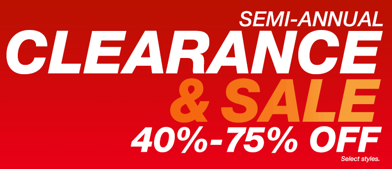

To take control over one’s private economy is alpha and not omega in a person’s life. There are multiple strategies to use in that regard. Some take larger risks in order to have greater savings in a later consecutive step, while some live from paycheck to paycheck. I am more careful and conservative, and mainly live on my mid-income salary, and have suggested a strategy which conforms to such a precautious mindset.
1. Think like a student

Many of us have been a student during some period of time, or at least lived under conditions that for some reason required some degree of financial austerity. Such circumstances are to be learned from. Even if you have much more disposable income in the future, internalize the same mentality although with greater flexibility. In practice this means to prioritize food, rent and bills before just about anything else.
2. Buy less important things in cheap stores or during sales periods

Some of the products and foodstuffs can be bought in local places at considerably lower costs. Just a little bit of research and extra efforts can reduce your expenses with 50%, which will make a substantial difference over time. Also look out for discounts and sales offers.
3. Buy a large share of your clothes in cheap stores or on large discounts

Like I have stressed multiple times before, style matters for me and it should for the majority of men as well. By combining cheap and more expensive items, I have managed to build a rather impressive and miscellaneous wardrobe over the years. As for the more costly garments, I often look out for sales periods during summer and Christmas. This act of patience has made me save about 50% and is definitely worth it when it comes to costumes, jackets, and shoes.
4. Make cost/benefit analyses

A crucial question that continuously should be asked is if this or that really is worth it. At ROK, we often use the term ROI (Return On Investment), as it tends to say something substantial about for instance nightclub game, women or luxurious toys.
More concretely, is it worth spending thousands of dollars in “classy” clubs to get laid with a 7? Is it wise to buy a leisure boat for 100,000 dollars, something that implies a rapid gradual decline in value, expensive fuel, and relatively few opportunities to actually use it?
Even when I spend considerable amounts on travel I often make cost/benefit analyses and almost make it into a sport of spending as little as possible, while simultanelously getting the most out of it in terms of fun.
5. Save about 1000 dollars every month

Generally it is about to find a proper balance between spending and saving, but to save about 1000 dollars every month is often reasonable for the mid-income man. Given that you don’t touch that money later on, you have more than $100,000 within ten years. Money that can be used for something truly valuable, or function as fuck you money.
6. Make a list of expensive things that you don’t need
Furthermore, to make a list of expensive things that you don’t need is a means to save serious money throughout life. It could be an expensive apartment or house in a city or high-status suburb, or a car or leisure boat that would be nice to have but completely devastate your private economy once you bought them. Often the above-mentioned cost/benefit analysis will be of great service.
7. Prioritize several beneficial things that cost you no money
Earlier, I have given suggestions on beneficial things that cost you no money. Once you find that many of those have greater value than soon-to-be-forgotten status symbols within the consumerist matrix, you have solved a large share of the financial issue.
8. Ask your family and social circle for furniture and utensils instead of buying new items

Many make the mistake to visit IKEA, or even more expensive stores, as soon as they move from one place to another, in order to spend thousands of dollars on sofas, skillets and whatnot. This typical middle-class and upper class sickness is in fact quite stupid, since there tend to be numerous high-quality furniture and utensils for free within one’s family, social circle, or even neighborhood. For example, recently a random neighbor gave away some really nice chairs when moving to another place.
Of course you should selectively buy new things every now and then, but think twice before you do it, and don’t let a woman have too much of a say on the matter since she is likely less restrained than a man with good character.
9. Use your disposable savings and don’t buy on credit

Lastly, whenever you buy things – like clothes, a trip, or a car – use your disposable income instead of taking a loan or buy on credit. I would only advice someone to take a loan when there is no other way, such as when you buy your own place after having paid 15-20% in down payment.
Conclusion
With the help from these approaches and strategies, I have managed to save a significant amount of money, travel the world, wear nice clothes, stay in shape, and still live in a decent rental apartment in a major European city. Although there are multiple approaches, I hope that these tips can be of some general value and applicability for fellow male readers.
Read More: How To Free Yourself From Debt